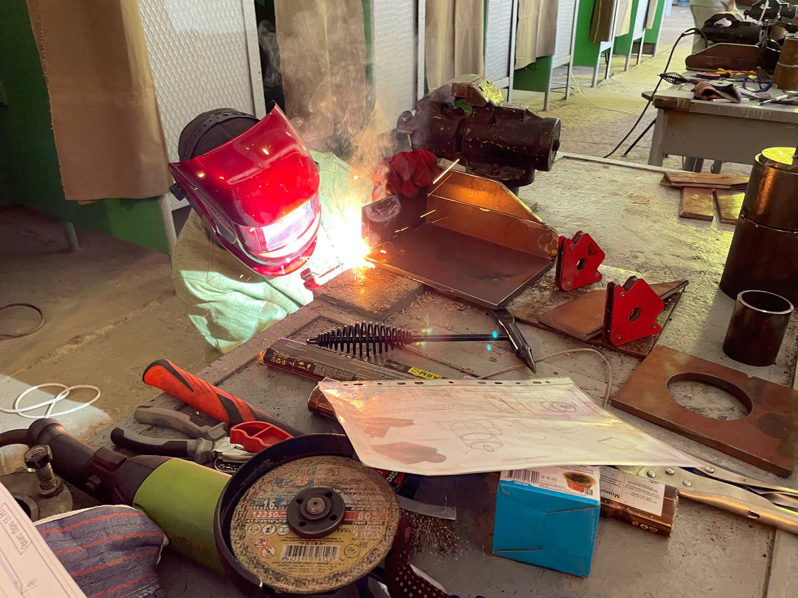
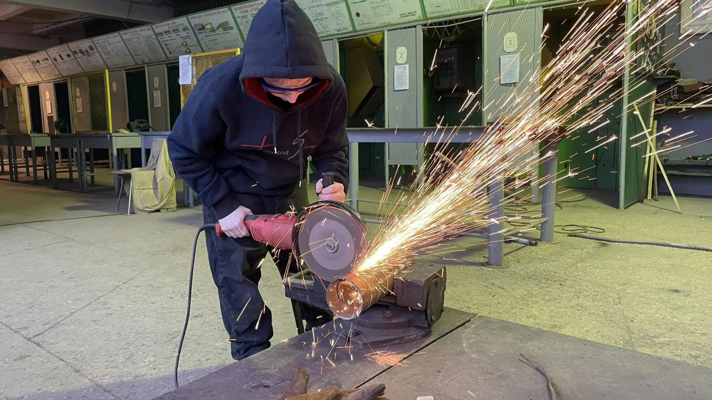
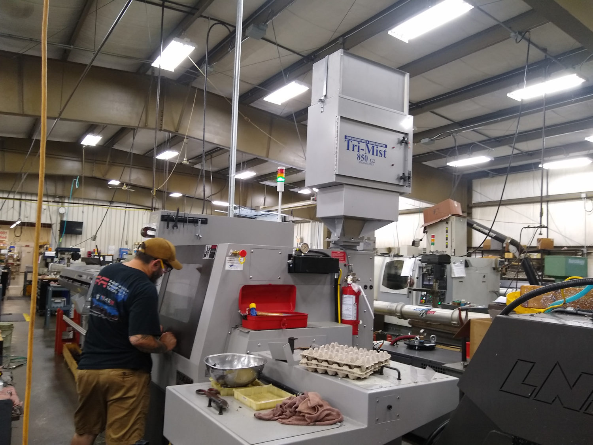
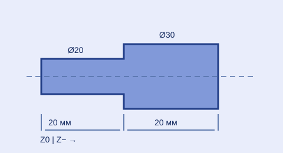
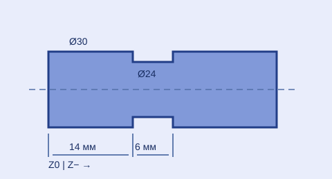
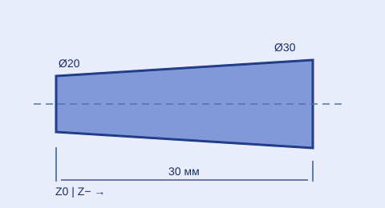
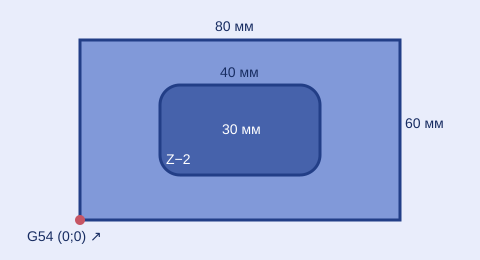
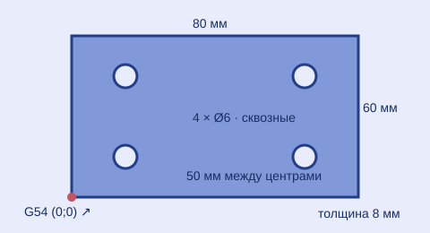
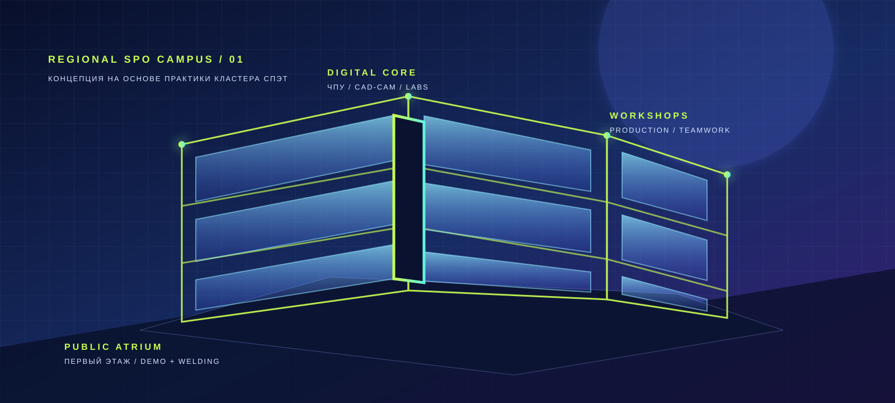

Проект площадки для педагогов, колледжей и предприятий Луганской Народной Республики. В основе идеи — обучение на реальных задачах и связь технологий с образованием.
Все параметры носят предварительный характер и уточняются при проектировании.
01 / О ЦЕНТРЕ
Место встречи знания и дела.
Виртуальный технопарк СПО ЛНР представляет идею открытого пространства, где педагог получает новые инструменты, студент пробует профессию на современном оборудовании, а предприятие формулирует реальные задачи.
В основе концепции — опыт калужского Федерального технопарка профессионального образования: подготовка педагогических кадров, лаборатории и кооперация с индустрией. В Луганске эта модель получает собственный региональный масштаб и архитектуру.
Повышение квалификации, освоение технологий и методическая поддержка.
02
⌘
Студенты
Практические проекты, профессиональные пробы и работа в командах.
03
✳
Предприятия
Кадровый запрос, наставничество и совместная работа над задачами.
02 / КЛАСТЕР СПЭТ
Технологии, которые уже работают.
Фотографии из официальной галереи Стахановского промышленно-экономического техникума показывают практику, оснащение и атмосферу кластера.

01 / СВАРОЧНЫЕ ТЕХНОЛОГИИИскра превращается в навыкПрактика студентов СПЭТ02 / ЧПУ И МЕТАЛЛООБРАБОТКАЦифровая точностьОператор-наладчик станков

03 / ПРОИЗВОДСТВЕННАЯ ПРАКТИКАСделано рукамиОт чертежа до готового изделия
ОСНАЩЕНИЕ / ПРОЕКТНЫЙ СОСТАВ
Станок — это учебный сценарий.
Для будущего центра предлагаем описывать оборудование так же, как это делают федеральные технопарки СПО: через задачу, технологическую операцию и результат обучения. Модели и точные характеристики определяются после технического задания и закупочной процедуры.
01 / МЕТАЛЛООБРАБОТКАЧПУ
Токарный станок с ЧПУ
Для обработки тел вращения: валов, втулок, осей и резьбовых деталей по управляющей программе.
Ученик осваивает
G-код · наладку · измерение
Результат
деталь по чертежу
Оператор-наладчик
02 / МЕТАЛЛООБРАБОТКАЧПУ
Вертикальный фрезерный станок
Для изготовления плоскостей, пазов, отверстий и контуров на заготовках из металла и пластика.
Ученик осваивает
CAD/CAM · базирование · контроль
Результат
пространственная деталь
Технология машиностроения
03 / ЗАГОТОВКАЛАЗЕР
Лазерный комплекс раскроя
Для подготовки листовых заготовок: от цифрового контура и карты раскроя до маркировки деталей.
Ученик осваивает
развёртку · режимы · nesting
Результат
комплект заготовок
Цифровое производство
04 / СВАРКАMIG/MAG
Сварочный пост
Учебное рабочее место для ручной дуговой и механизированной сварки, сборки и визуального контроля соединений.
Ученик осваивает
режим · шов · безопасность
Результат
контролируемое соединение
Сварочные технологии
05 / КОНТРОЛЬQC
Измерительная лаборатория
Для проверки геометрии, размеров и шероховатости детали после механической обработки.
Ученик осваивает
штангенциркуль · микрометр · КИМ
Результат
карта контроля
Качество и метрология
06 / ПРОЕКТИРОВАНИЕCAD/CAM
Цифровой пост технолога
Рабочее место для 3D-моделирования, подготовки управляющих программ и цифрового сопровождения производства.
Ученик осваивает
3D-модель · техпроцесс · симуляцию
Результат
цифровой комплект детали
Технология машиностроения
Фото предоставлены официальной фотогалереей техникума; сайт центра остаётся проектной концепцией. Источник фотогалереи ↗
КАТАЛОГ ОБОРУДОВАНИЯ
Техника для практики: модели и процессы.
Примеры известных линеек и моделей для знакомства с токарной и фрезерной обработкой, основными способами сварки и роботизированными ячейками. Это справочный каталог, а не перечень закупленного оснащения центра.
Станки с ЧПУ Точение и фрезерование

ТОКАРНЫЙ ЧПУ · АВТОМАТ
Tsugami · автоматы продольного точения
Для серийного изготовления небольших деталей вращения из прутка: втулок, осей и крепежа. В учебном маршруте — подача прутка, программирование операций и контроль геометрии.
Станок для обработки валов, втулок и других тел вращения: точения, сверления, растачивания, нарезания резьбы и канавок. Для исполнения /1000 производитель указывает заготовку до Ø580 × 918 мм и частоту вращения шпинделя до 1650 об/мин.
Компактный центр для фрезерования, сверления, растачивания и нарезания резьбы. Для модели ФС65МФ3/4 производитель указывает стол 780 × 360 мм, заготовку массой до 350 кг и шпиндель до 12 000 об/мин.
Линейка источников для механизированной сварки проволокой в защитном газе. Предусмотрены синергетические настройки и варианты импульсных программ для работы с различными материалами.
Линейка источников для сварки неплавящимся электродом в аргоне и штучным покрытым электродом. Позволяет разбирать настройку тока, импульса и поджига дуги.
Ручная лазерная система для сварки тонколистового металла. В каталоге — пример отдельной технологии с иной организацией рабочего места и защитой от лазерного излучения.
Сварочная ячейка с шестиосевым манипулятором, источником, подачей проволоки, пультом и станцией очистки горелки. Учебные задачи — траектория, позиционирование и контроль цикла.
Подборка иллюстрирует классы оборудования и конкретные примеры линеек; сравнительной статистики распространённости моделей нет. Изображения ТС1625Ф3 и ФС65МФ3 взяты из каталога СтанкоМашКомплекс. Состав будущего центра определяется отдельно по техническому заданию.
Пять учебных деталей и пять соответствующих программ: три операции точения и две фрезерные задачи. Схемы показывают готовые детали и расположение нуля детали.
Примеры записаны в стиле ISO/Fanuc, размеры и координаты — в миллиметрах; X токарного станка задан в диаметрах. Заготовки для точения предварительно обработаны до указанного наружного диаметра. Перед применением на конкретном оборудовании требуется адаптация к стойке, оснастке и инструменту, моделирование траектории и проверка наладчиком.
01 / ТОЧЕНИЕ
Ступенчатый вал

Деталь 01 · ступень Ø20 × 20 мм, основание Ø30 × 20 мм
Исходная заготовка: пруток Ø30 мм с припуском по длине. Программа формирует ступень на первых 20 мм от переднего торца; отрезка и обработка обратного торца не включены.
Ноль G54
ось вращения, передний торец (Z0)
Инструмент
T0101, проходной резец
УП 01 / O0101
O0101 (STEP SHAFT D20/D30)
02 / ТОЧЕНИЕ
Валик с кольцевой канавкой

Деталь 02 · Ø30 × 40 мм, канавка Ø24 × 6 мм
Учебный пример наружной канавки на предварительно обточенной заготовке Ø30 мм. Три врезания резцом шириной 2 мм дают канавку от Z−14 до Z−20. Отрезка в эту УП не входит.
Ноль G54
ось вращения, передний торец (Z0)
Инструмент
T0202, канавочный резец 2 мм
УП 02 / O0102
O0102 (EXTERNAL GROOVE D24)
03 / ТОЧЕНИЕ
Конический палец

Деталь 03 · конус Ø20 → Ø30, длина 30 мм
Профиль из одного линейного перемещения по двум осям: от переднего торца Ø20 к Ø30 при Z−30. УП показывает геометрию чистового прохода; предварительная черновая обработка не описана.
Ноль G54
ось вращения, передний торец (Z0)
Инструмент
T0101, проходной резец
УП 03 / O0103
O0103 (TAPER D20 TO D30)
04 / ФРЕЗЕРОВАНИЕ
Пластина с прямоугольным карманом

Деталь 04 · пластина 80 × 60 мм, карман 40 × 30 × 2 мм
Заготовка 80 × 60 мм; центр фрезы Ø10 идёт по параллельным дорожкам от X25 до X55 и Y20–40. Получается карман с радиусом внутренних углов 5 мм.
Ноль G54
левый нижний угол сверху, Z0 на поверхности
Инструмент
T1/H01, концевая фреза Ø10 мм
УП 04 / O0201
O0201 (RECTANGULAR POCKET)
05 / СВЕРЛЕНИЕ НА ФРЕЗЕРНОМ ЧПУ
Пластина с четырьмя отверстиями

Деталь 05 · пластина 80 × 60 × 8 мм, 4 отверстия Ø6 мм
Цикл G81 выполняет четыре одинаковых отверстия. Координаты центров: (15;15), (65;15), (65;45), (15;45). Z−10 обеспечивает проход через пластину толщиной 8 мм при наличии подкладки.
Ноль G54
левый нижний угол сверху, Z0 на поверхности
Инструмент
T2/H02, сверло Ø6 мм
УП 05 / O0202
O0202 (FOUR THROUGH HOLES)
03 / НАПРАВЛЕНИЯ
Навыки, которые двигают регион.
Проектный перечень образовательных направлений. Конкретные программы будут определяться вместе с колледжами и работодателями.
Показано направлений: 7 из 7
01 / ПРОИЗВОДСТВО⚙
Машиностроение и металлообработка
Полный маршрут: чертёж → CAM-программа → наладка станка с ЧПУ → контроль готовой детали.
↗02 / МАСТЕРСКАЯ✳
Сварочные технологии
MIG/MAG, TIG/MMA, лазерная и роботизированная сварка: от настройки дуги до контроля соединения.
↗03 / ЛАБОРАТОРИЯ◇
Автоматизация и робототехника
Интеллектуальные системы и управление процессами.
↗04 / ЛАБОРАТОРИЯ⌘
Цифровое производство
Проектирование, моделирование и работа с данными.
↗05 / ЭНЕРГЕТИКА↯
Энергетика и безопасность
Электроснабжение предприятия, автоматика, диагностика оборудования и безопасная организация работ.
↗06 / МЕТОДИЧЕСКИЙ ЦЕНТР✦
Педагогический дизайн СПО
Новые форматы обучения и оценка компетенций.
↗07 / ПРОИЗВОДСТВО◈
Металлургия и материаловедение
От состава и структуры металла до заготовки, термообработки и контроля качества.
↗
01 / ПРОИЗВОДСТВО
Обработка металла на станках с ЧПУ
Станок с числовым программным управлением связывает конструкторскую модель, технологический процесс и физическую деталь. В учебном центре студент проходит весь цикл — от чтения чертежа до измерения результата.
01
Спроектировать
Прочитать чертёж, определить материал, базовые поверхности, припуски и требования к точности.
02
Подготовить
Создать 3D-модель и CAM-траекторию, выбрать инструмент, режимы резания и безопасную последовательность операций.
03
Наладить
Закрепить заготовку, установить инструмент, задать нулевые точки и проверить программу в симуляции и холостом проходе.
04
Обработать
Выполнить точение или фрезерование, контролируя подачу, стружку, охлаждение, вибрации и состояние инструмента.
05
Проверить
Измерить размеры и геометрию, оформить карту контроля и при необходимости скорректировать технологический процесс.
Токарная обработкаВалы, втулки, резьбы, канавки и наружные/внутренние поверхности вращения.
Фрезерная обработкаПлоскости, пазы, отверстия, карманы и контуры на призматических деталях.
В основе учебной сварочной зоны — не только аппарат и пост, а связка из технологии, цифрового управления, подготовки наставников и контроля качества. Информация о решениях EVOSPARK и образовательных проектах приведена по материалам Deria.
MIG/MAG
Механизированная сварка
Семейство EVOMIG объединяет источник, подающее устройство и программные режимы для работы со сталями и алюминиевыми сплавами. Для учебной зоны важны синергетическое управление, ручная корректировка параметров и понятный русскоязычный интерфейс.
DAC Normal — стандартный режим коротких замыканий
DAC Root — корневые швы и тонкий металл
DAC Pulse — импульсные процессы для контроля тепловложения
TIG / MMA
Точная ручная сварка
EVOTIG рассчитан на аргонодуговую и ручную дуговую сварку. Цифровая циклограмма помогает настраивать ток, импульс, поджиг, форму волны переменного тока и режимы для различных электродов.
DC и AC-процессы для стали и алюминия
Pulse, HF, Lift Arc и Hot Start
точечный, непрерывный и интервальный шов
LASER
Скорость и минимальная деформация
Лазерная сварка LightWELD описывается Deria как высокоскоростной процесс с малой зоной термического влияния. В проекте это отдельный демонстрационный модуль для знакомства с технологией, а не замена базовым сварочным постам.
сварка тонколистового металла
минимум деформации и постобработки
режимы очистки до и после сварки
Подготовкачертёж, разделка кромок, сборка, зазоры и оснастка
Настройкаток, напряжение, скорость подачи, газ и программа
Выполнениеположение шва, ванна, тепловложение, брызги и проплавление
Контрольвизуальный контроль, размеры, дефекты и документирование
РАЗВИТИЕ КОМПЕТЕНЦИЙ
Роботизированная сварка в СПО
Deria описывает учебную роботизированную ячейку CASSI как комплекс: шестиосевой манипулятор, источник, подача проволоки, шкаф управления, пульт обучения, автоматическая горелка, станция очистки и ПО Navi. Студент учится программировать траектории, настраивать режимы и выполнять холостую отработку.
4шага подготовки оператораточки траектории · программа · режим · контроль
Энергетика предприятия — это не только электрический щит. Это непрерывная цепочка от ввода и трансформации энергии до распределения по цехам, защиты, измерений, диагностики и безопасного вывода оборудования в ремонт.
01Ввод и преобразование
Приём электроэнергии, трансформаторная подстанция, распределительные устройства и понижение напряжения до уровня потребителей.
02Распределение
Питание станков, сварочных постов, вентиляции, насосов, компрессоров и систем освещения по отдельным линиям и группам.
Измерение напряжения, тока, мощности, качества электроэнергии и энергопотребления; поиск перегрузок и потерь.
05Техническое обслуживание
Осмотр, диагностика, проверка изоляции, контактных соединений и защитных устройств по регламенту.
ПРОФЕССИИ И РОЛИ
Кто работает с промышленной энергетикой
Электромонтёр — монтаж, ремонт и обслуживание электрооборудования и кабельных линий.
Техник по эксплуатации электрического и электромеханического оборудования — обслуживание приводов, машин, аппаратов и систем предприятия.
Специалист по релейной защите и автоматике — настройка защит, блокировок, сигнализации и противоаварийных функций.
Энергетик предприятия — планирование потребления, надёжность снабжения, эксплуатационные документы и организация работ.
ПРОФИЛЬ СПЭТ
Проект учебной лаборатории
На сайте СПЭТ представлена специальность 13.02.13 «Эксплуатация и обслуживание электрического и электромеханического оборудования (по отраслям)» с квалификацией техника. Для будущего центра предлагается лаборатория электропривода, распределительных устройств, измерений и диагностики.
Безопасностьотключение · проверка отсутствия напряжения · заземление · ограждение зоны · СИЗ · допуск квалифицированного персонала
Индустриальный результатнадёжная линия питания · сокращение простоев · безопасный ремонт · контролируемое энергопотребление
Источник о специальности:официальный сайт СПЭТ ↗Профессии, процессы и состав лаборатории приведены как проектные образовательные сценарии; наличие оборудования в СПЭТ или будущем центре не заявляется.
04 / АВТОМАТИЗАЦИЯ И РОБОТОТЕХНИКА
Система, которая видит и действует.
Промышленная автоматизация объединяет датчики, контроллеры, приводы, программное обеспечение и роботов в единый контур. Студент учится не просто запускать механизм, а проектировать его поведение, проверять безопасность и анализировать результат.
01Измерить
Датчики считывают положение, расстояние, температуру, давление, ток или наличие детали.
02Решить
ПЛК или промышленный контроллер обрабатывает сигнал по алгоритму и формирует команду.
03Привести в действие
Электропривод, пневматика, сервомотор или робот выполняет заданное движение.
04Проверить
HMI/SCADA показывает состояние процесса, а обратная связь выявляет отклонения и аварии.
ПЛК / HMI
Логика и визуализация
Сборка схем управления, подключение входов и выходов, написание алгоритма, настройка панели оператора и поиск неисправностей.
дискретные и аналоговые сигналы
межблочные блокировки
аварийные сценарии
МЕХАТРОНИКА
Движение и точность
Связка механики, электроники и программирования: сервоприводы, частотные преобразователи, пневматические цилиндры и датчики положения.
кинематическая схема
настройка привода
цикл оборудования
РОБОТ
Траектория и ячейка
Проектирование безопасной рабочей зоны, обучение робота точкам, холостой прогон, настройка захвата и взаимодействие с технологическим оборудованием.
манипулятор и оснастка
координаты и траектория
сканирование зоны
ПРОФЕССИИ И РОЛИ
Специалист автоматизированного производства
Техник по автоматизации — монтаж, наладка и обслуживание систем управления.
Программист ПЛК — алгоритмы, HMI, диагностика и обмен данными.
Оператор/программист робота — точки, траектории, режимы и безопасный запуск ячейки.
Техник-мехатроник — интеграция механики, электрики, пневматики и программного управления.
ОБРАЗОВАТЕЛЬНАЯ ТРАЕКТОРИЯ
От стенда к производственной ячейке
Сначала студент собирает простую цепь и учится читать сигнал, затем программирует контроллер, настраивает привод и объединяет оборудование в учебную ячейку. Такой подход согласуется с логикой технопарков СПО: подготовка кадров и наставников строится вокруг практических лабораторий и реальных производственных задач.
Проектное направление связывает получение металлической заготовки, её структуру и свойства с задачами обработки, сварки и эксплуатации. Учебная программа строится на моделировании процессов, работе с образцами и контроле качества.
01
Выбрать материал
Сравнить марки сталей, чугунов и цветных сплавов по составу, назначению и требованиям к изделию.
02
Получить заготовку
Изучить плавку, литьё, прокатку и ковку на схемах и образцах; выбрать способ получения формы.
03
Изменить структуру
Сопоставить режимы нагрева и охлаждения, понять действие закалки, отпуска и отжига.
04
Проверить качество
Оценить твёрдость, микроструктуру и поверхностные дефекты, оформить результаты измерений.
МАТЕРИАЛОВЕДЕНИЕ
Структура и свойства
Маркировка сплавов, связь химического состава с прочностью, пластичностью и обрабатываемостью.
ТЕХНОЛОГИИ
Литьё и обработка
Маршрут от расплава до заготовки; сравнение литой и деформированной структуры и выбор термообработки.
КОНТРОЛЬ
Материал под задачу
Измерение твёрдости, подготовка шлифа, изучение микроструктуры и разбор типичных дефектов.
ПРОФЕССИИ И РОЛИ
От технолога до контролёра
Техник-металлург, термист, лаборант материаловедческой лаборатории, специалист по контролю качества.
УЧЕБНЫЙ ПРОЕКТ
Выбрать заготовку для детали
Студенты сравнивают два сплава, обосновывают технологию получения заготовки, предлагают режим обработки и проверяют образец.
Плавильные и термические установки, если они войдут в проект, требуют отдельного технического задания, инженерного обеспечения и организации безопасной работы. Их наличие в будущем центре пока не утверждено.
БАС / ПЕРСПЕКТИВНОЕ НАПРАВЛЕНИЕ
Беспилотные системы. От задачи к данным.
БАС — это воздушное судно вместе с оборудованием управления и обеспечения работы. Ниже — примеры гражданского применения в России и возможная модель обучения для СПО; программа центра пока не утверждена.
01 / ПРИМЕНЕНИЕ
Для чего используют БАС в России
АГРО
Сельское хозяйство
Мониторинг состояния полей, оценка посевов и, при подходящем оборудовании и соблюдении требований, выполнение агротехнологических работ.
ИНФРАСТРУКТУРА
Осмотр объектов
Аэрофотосъёмка для обследования дорог, линий электропередачи и сооружений; анализ снимков помогает находить изменения и дефекты.
КАРТОГРАФИЯ
Съёмка территории
Сбор изображений для ортофотопланов и цифровых моделей местности с последующей проверкой качества данных.
ПРИРОДА
Мониторинг среды
Наблюдение за лесными и природными территориями, документирование изменений и передача материалов специалистам.
02 / ТИПЫ
Разные платформы — разные задачи
✣
01 / МУЛЬТИРОТОР
Многороторный
Вертикальный взлёт и зависание: удобен для детального осмотра и съёмки небольших участков. Дальность и время полёта зависят от конфигурации.
➤
02 / САМОЛЁТ
Самолётного типа
Крыло обеспечивает эффективный полёт по маршруту и охват больших территорий; для взлёта и посадки нужны подходящие условия.
✦
03 / ГИБРИД
С вертикальным взлётом
Сочетает вертикальный взлёт с горизонтальным полётом на крыле; устройство и эксплуатация сложнее, чем у базовых учебных моделей.
Классификация здесь дана по схеме полёта. Выбор платформы зависит от полезной нагрузки, площади работ, условий площадки и действующих требований.
03 / ПРЕДЛОЖЕНИЕ ДЛЯ СПО
Учебный маршрут: от симуляции к прикладному результату
01
Теория и правила
Устройство БАС, основы аэродинамики, безопасность, учёт воздушных судов и правила использования воздушного пространства.
02
Симулятор
Управление, планирование маршрута, действия при сбоях и разбор ошибок без полётов в реальной среде.
03
Сборка и обслуживание
Изучение узлов, проверка электроники, настройка программного обеспечения и контроль технического состояния.
04
Работа с данными
Обработка учебных снимков, построение карты и оформление отчёта для конкретной гражданской задачи.
05
Полётная практика
Возможна лишь при наличии подходящей площадки, подготовленных специалистов и соблюдении действующих правил и ограничений.
Пример учебного кейса: по готовым снимкам участка сравнить состояние территории в разные даты, отметить изменения на карте и представить отчёт заказчику. Этот этап можно провести без полёта.
Новая версия проекта переносит сильные стороны кластера СПЭТ в будущий региональный центр: прозрачные мастерские, цифровое ядро и безопасный производственный маршрут.

01 / КОНЦЕПЦИЯ КАМПУСА · НА ОСНОВЕ ПРАКТИКИ КЛАСТЕРАЛУГАНСК / ПРОЕКТ
ПОЭТАЖНАЯ СХЕМА
Каждому этажу — своя роль.
Выберите этаж, чтобы увидеть обновлённую программу здания, собранную вокруг маршрута кластера: от знакомства с профессией до самостоятельного проекта.
Модель центра строится на совместной работе с образовательными организациями и реальным сектором. Каждый партнёр приносит экспертизу, задачи и возможности для практики.
Сетевые программы, педагоги, студенты и учебные площадки.
02
Предприятия
Технологические кейсы, наставники и обратная связь по компетенциям.
03
Профессиональное сообщество
Методическая экспертиза, обмен практиками и развитие педагогов.
ПРЕДПРИЯТИЯ ЛУГАНСКОГО РО СОЮЗМАШ
Кому можно предложить практическую задачу.
Ниже перечислены предприятия, названные на официальной странице состава Регионального совета Луганского регионального отделения Союза машиностроителей России. Их участие в проекте центра пока не является подтверждённым партнёрством.
01 / ЛУГАНСК
ООО «ЛУГАМАШ»
Машиностроительное предприятие; генеральный директор предприятия возглавляет Луганское региональное отделение СоюзМаш.
Возможный формат: наставничество, кейсы по машиностроению, практики для студентов.02 / ЛУГАНСК
ООО «Лугцентрокуз им. С.С. Монятовского»
Предприятие, представленное генеральным директором в составе Регионального совета СоюзМаш.
Предприятие, представленное председателем наблюдательного совета в составе Регионального совета СоюзМаш.
Возможный формат: ремонт и обслуживание, диагностика, проектные задания для мастерских.04 / ЛУГАНСК
Луганский завод трубопроводной арматуры «Маршал»
Предприятие, представленное советником генерального директора в составе Регионального совета СоюзМаш.
Возможный формат: металлообработка, сварка, контроль качества и промышленная безопасность.
ОФИЦИАЛЬНЫЙ ИСТОЧНИКСтраница Луганского регионального отделения СоюзМаш ↗Состав приведён по опубликованному Региональному совету; актуальный реестр предприятий-членов и условия сотрудничества необходимо уточнять непосредственно у отделения.
06 / СОБЫТИЯ
Центр, в котором всегда есть движение.
Предлагаемые форматы будущей программы. Даты появятся после утверждения проекта и запуска центра.
ФОРМАТ 01
Открытые мастерские
Знакомство школьников и студентов с профессиями через практику.
↗ФОРМАТ 02
Интенсивы для педагогов
Обновление методик и освоение современного оборудования.
↗ФОРМАТ 03
Индустриальные сессии
Совместная работа колледжей и предприятий над кадровыми задачами.
↗
07 / КОНТАКТЫ И МАТЕРИАЛЫ
Будущее СПО начинается здесь.
Проект размещения — город Луганск. Адрес, реквизиты и каналы связи будут опубликованы после утверждения проекта центра.
{kind=link}